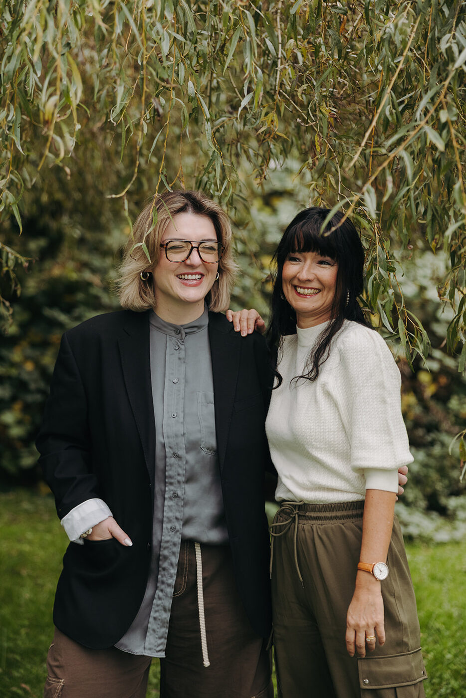
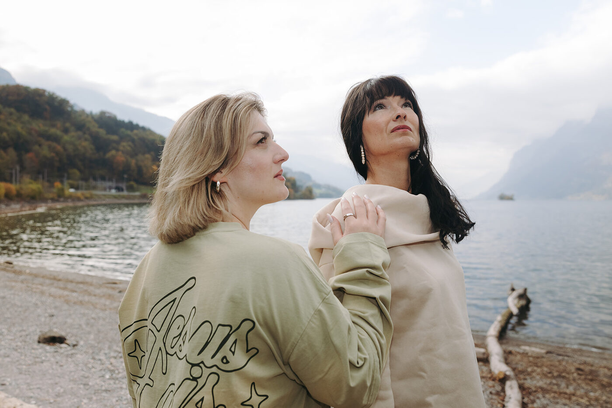
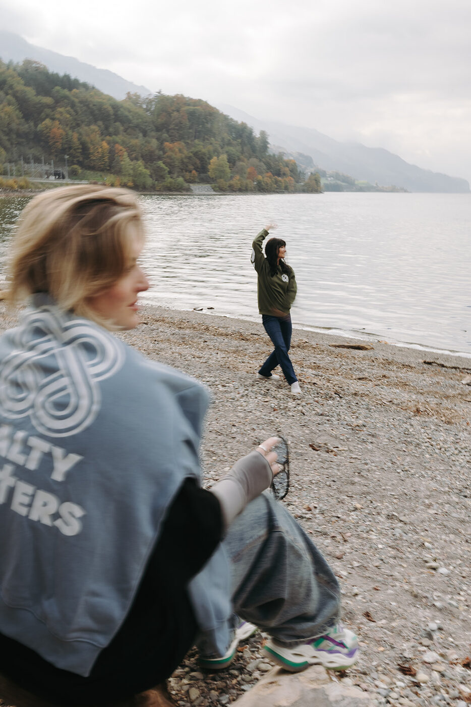
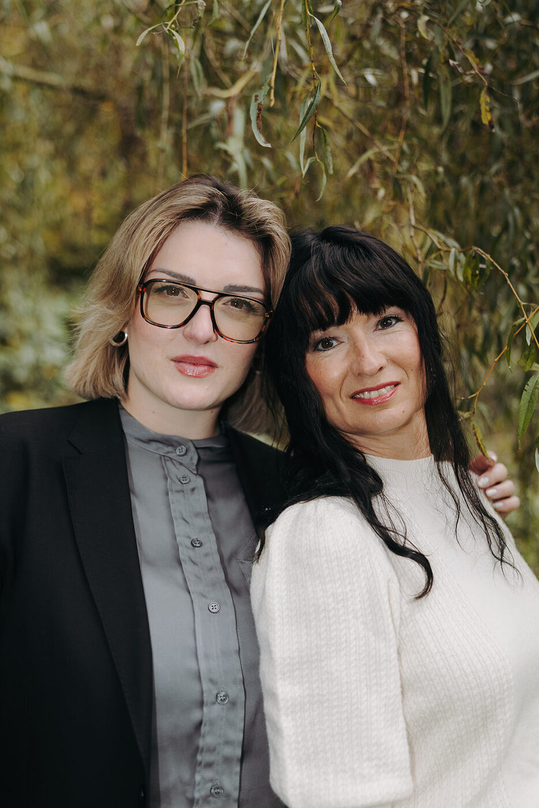

Unsere Vision
Wir sehen eine Bewegung von Frauen, die in ihrer Identität in Christus leben, in Freiheit und Reinheit aufblühen und aus dieser Fülle heraus andere Frauen freisetzen.
Von Frauen. Für Frauen.
Eine Bewegung von Frauen, die Jesus nachfolgen, echte Gemeinschaft leben und andere Frauen in Freiheit führen.




Von Frauen. Für Frauen.
Wir sehen eine Bewegung von Frauen, die in ihrer Identität in Christus leben, in Freiheit und Reinheit aufblühen und aus dieser Fülle heraus andere Frauen freisetzen.
SALTY SISTERS erreicht Frauen digital, führt sie in Gottes Gegenwart und befähigt sie, selbst Teil einer multiplizierenden Bewegung zu werden.
Was wir leben
Wir sind Frauen, die Jesus nachfolgen und geschmackvoll in ihrem Umfeld leben. Wir leben Gemeinschaft als Schwestern auf Augenhöhe. Wir geben weiter, was wir empfangen haben. Jede Frau ist willkommen und jede Frau ist gefragt.
Das hier ist ein Ruf. Willkommen Zuhause.Mitgründerin · Visionärin · Worship-Leiterin
Celina trägt als Visionärin, Vernetzerin und Anzünderin den Ruf, Frauen in ihre von Gott gegebene Identität zu führen. Sie bringt Klarheit, die in wahre Freiheit und Reinheit mündet. Zwei Worte prägen ihr Leben: Hingabe und Auserwählung.
Mitgründerin · Tänzerin · Seelsorgerin
Sonja trägt ein tiefes Anliegen, Frauen in ihre von Gott gegebene Identität zu führen und sie in ihrer kreativen und geistlichen Berufung freizusetzen. Ihr Herz ist es, Frauen nicht nur zu stärken, sondern sie zu befähigen, selbst wieder andere Frauen zu begleiten.
Finde deine Schwestern
SALTY SISTERS ist mehr als Content. Es ist echte Gemeinschaft. Lokale Gruppen in der Schweiz, Deutschland und Österreich. Frauen, die gemeinsam Jesus nachfolgen.
Karte wird geladen...
Regelmässige Treffen bei jemandem zu Hause, in einem Café oder online. Ehrliche Gespräche, gemeinsames Gebet, Worship und Jüngerschaft. Kein Programm, keine Hürden. Jede Frau ist willkommen.
Werde Teil davon
Werde Teil dessen, was Gott durch SALTY SISTERS baut. Wir glauben, dass Geben freiwillig geschieht, aus dem, was Gott ins Herz legt.
Deine Spende fliesst direkt in den Aufbau von SALTY SISTERS, von Content bis hin zu lokalen Communities und Jüngerschaft.
Kontakt
Für Community, Worship, Podcast, Spenden oder allgemeine Fragen. Deine Nachricht landet direkt bei SALTY SISTERS.